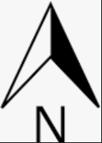

<html>
	<head>
	<!--sisipkan kode pemuatan disini -->
	<link rel="stylesheet" href="leaflet/leaflet.css"/>
	<script src="leaflet/leaflet.js"></script>
	
	<!--Menghubungkan html dengan plugin leafletgrupedlayercontrol -->
	<link rel="stylesheet" href="leaflet/leaflet.grupedlayercontrol.css"/>
	<script src="leaflet/leaflet.grupedlayercontrol.js"></script>
	
	<!--Menghubungkan html dengan plugin Lcontrolmouseposition -->
	<link rel="stylesheet" href="leaflet/L.Control.MousePosition.css"/>
	<script src="leaflet//L.Control.MousePosition.js"></script>
	
	<!--Menghubungkan html dengan plugin leafletminimap -->
	<link rel="stylesheet" href="leaflet/Control.Minimap.css"/>
	<script src="leaflet//Control.Minimap.js"></script>
	
	<!--Menghubungkan html dengan plugin leafletlinearmeasurement -->
	<link rel="stylesheet" href="leaflet/Leaflet.LinearMeasurement.css"/>
	<script src="leaflet//Leaflet.LinearMeasurement.js"></script>
	
	<!--Menghubungkan html dengan double right click to zoom -->
	<link rel="stylesheet" href="leaflet/Leaflet.rightclickzoom.css"/>
	<script src="leaflet//Leaflet.rightclickzoom.js"></script>
	
	<link rel="stylesheet" href="leaflet/leaflet.groupedlayercontrol.css"/> 
	<script src="leaflet/leaflet.groupedlayercontrol.js"></script>


	</head>
	<body>
<!-- peta akan ditampilkan disini -->
			<div style="height:500px" id="mapid"></div>
	<body>
	<script src="kec_padangpanjang.js"></script>
	
	<script>
   var mymap = L.map('mapid').setView([ -0.470986,100.406033], 13);
   var GoogleMaps = new L.TileLayer('https://mt1.google.com/vt/lyrs=m&x={x}&y={y}&z={z}', { 
     opacity: 1.0, attribution: 'Ketrampilan Berkehidupan dan WEBSIG UMS'
	}).addTo(mymap);
	var GoogleSatelliteHybrid = L.tileLayer('https://mt1.google.com/vt/lyrs=y&x={x}&y={y}&z={z}', { 
     maxZoom: 22, 
     attribution: 'Ketrampilan Berkehidupan dan WEBSIG UMS' 
	});

	var baseLayers = {
     'Google Satellite Hybrid': GoogleSatelliteHybrid,
     'Google Maps': GoogleMaps,
	}; 

L.control.groupedLayers(baseLayers).addTo(mymap);
var polyg2 = L.geoJson(polygons.features).addTo(mymap);

// Menambahkan titik penanda dan informasi di peta kita
	var marker = L.marker([-0.470986, 100.406033]).addTo(mymap);
	marker.bindPopup("<b>Informasi</b><br>Gen Azza_E100190059");
	var marker = L.marker([-0.463979, 100.394998]).addTo(mymap);
	marker.bindPopup("<b>Informasi</b><br>Febriana Dwi Prahapsari_E100190060");
	var marker = L.marker([-0.472068, 100.431756]).addTo(mymap);
	marker.bindPopup("<b>Informasi</b><br>Taqiyyah Lungid Hanan_E100190058");
	
// Menambahkan scale bar
L.control.scale( {position:"bottomright",maxWidth:200,imperial:false} ).addTo(mymap);

// Menambahkan arah utara
    var north = L.control({position: "bottomleft"});
    north.onAdd = function(mymap) {
    var div = L.DomUtil.create("div", "info legend");
    div.innerHTML = '';
    return div;
    }
    north.addTo(mymap);
	
// Menambahkan Plugin leaflet Minimap (inset)
   var osmUrl='http://{s}.tile.openstreetmap.org/{z}/{x}/{y}.png';
   var osmAttrib='Map data &copy; OpenStreetMap contributors';
   var osm = new L.TileLayer(osmUrl, {minZoom: 5, maxZoom: 18, attribution: osmAttrib});

   mymap.addLayer(osm);
   mymap.setView(new L.LatLng(-0.470986,100.406033),13);
		
 //Plugin magic goes here! Note that you cannot use the same layer object again, as that will confuse the two map controls
   var osm2 = new L.TileLayer(osmUrl, {minZoom: 0, maxZoom: 13, attribution: osmAttrib });
   var miniMap = new L.Control.MiniMap(osm2, { Position: "bottomright", toggleDisplay: true }).addTo(mymap);
   
 // Menambahkan plugin leafleat mouse monitor dalam satuan Geografi
    L.control.mousePosition({position:"bottomleft",numDigits:"7"}).addTo(mymap);
	
// Menambahkan linear measurenment Tool
   mymap.addControl(new L.Control.LinearMeasurement({position : "topright", color: "#8c0b25", unitSystem: " metric"}));
  
   


 


</script>

</html>